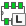
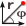
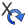

リファレンス・マニュアル
著作権
このドキュメントは以下の貢献者により著作権所有 © 2010-2015 されています。あなたは、GNU General Public License ( http://www.gnu.org/licenses/gpl.html ) のバージョン 3 以降、あるいはクリエイティブ・コモンズ・ライセンス ( http://creativecommons.org/licenses/by/3.0/ ) のバージョン 3.0 以降のいずれかの条件の下で、配布または変更することができます。
このガイドの中のすべての商標は、正当な所有者に帰属します。
*貢献者*
Jean-Pierre Charras, Fabrizio Tappero, Wayne Stambaugh.
翻訳
starfort <starfort AT nifty.com>, 2015. kinichiro <kinichiro.inoguchi AT gmail.com>, 2015. yoneken <yoneken AT kicad.jp>, 2011-2015.
フィードバック
バグ報告や提案はこちらへお知らせください:
-
KiCad のドキュメントについて : https://github.com/KiCad/kicad-doc/issues
-
KiCad ソフトウェアについて : https://bugs.launchpad.net/kicad
-
KiCad ソフトウェアの国際化について : https://github.com/KiCad/kicad-i18n/issues
発行日とソフトウエアのバージョン
2015年3月22日 発行
1. CvPcb入門
CvPcb は、プリント回路基板をレイアウトする際に使用されるコンポーネントのフットプリントを回路図中のコンポーネントに関連付けることができるツールです。 この関連付けは、回路図エディタ Eeschema により作成されたネットリストファイルに追加されます。
Eeschema によって生成されたネットリスト·ファイルは、コンポーネントのフットプリントフィールドが初期化された時だけ、回路図中のコンポーネントとフットプリントの関連付けが行われます。
この場合、コンポーネントのフットプリントは、コンポーネントのフットプリントフィールドを設定することで、回路設計中に関連付けされます。または、回路シンボルが読み込まれた時に回路図のライブラリ内に設定されます。
CvPcb は、コンポーネントにフットプリントを関連付けるのに便利な方法を提供します。CvPcb では、各コンポーネントに正しいフットプリントが関連付けられていることを確認するのに役立つ、3Dコンポーネントモデルの表示やフットプリントの表示、フットプリントのリストのフィルタリングが行えます。
コンポーネントは、等価ファイル (.equ files) を作成することによって、手動または自動でそれらに対応するフットプリントに割り当てることができます。等価ファイルは、各コンポーネントをフットプリントに関連付けるルックアップテーブルです。
この対話型のアプローチは、直接回路図エディタでフットプリントを関連付ける方法よりもシンプルであり、間違いが起こりにくい傾向があります。
CvPcb を使うと、正しいフットフリントを関連付けるために利用可能なフットプリントのリストを見たり、画面上にそれらを表示したりしながら作業できます。
CvPcb は Eeschema からのみ実行できます。 Eeschema は KiCad プロジェクトマネージャー から起動、もしくは単独のアプリケーションとして起動され、どちらの場合でも、その上部ツールバー から CvPcb を実行することができます。
KiCad プロジェクトマネージャーから起動した Eeschema から CvPcb を実行するほうが一般的には望ましいと言えます。何故なら:
-
Cvpcb は読み込まれるフットプリントライブラリを認識するためにプロジェクト定義ファイルを必要とします。
-
Cvpcb は現在の回路図プロジェクトのコンポーネントのフットプリントフィールドを初期化します。これは、開かれた回路図とプロジェクトファイルが同じディレクトリに存在する場合のみ可能です。
KiCad プロジェクトマネージャーから起動した Eeschema からの CvPcb の実行は、これらが全て自動的に行われることを保証します。
|
警告
|
実際には、スタンドアロンで起動した Eeschema から CvPcb を呼び出すこともできます。しかしながら、同じディレクトリにプロジェクトファイルがない状態で開かれた回路図はライブラリがないためコンポーネントを見失い、CvPcb で表示されないことにご注意ください。もし開いた回路図と同じディレクトリに fp-lib-table ファイルがなければ、プロジェクト固有のフットプリントライブラリもまた無効になるでしょう。 |
2. CvPcb の特徴
2.1. 手作業あるいは自動での関連付け
CvPcb は等価ファイルによる自動割当と同じ様に インタラクティブな割当（手作業）を可能にします。
3. CvPcb を起動する
CvPcb は Eeschema という回路図エディターからのみ呼び出しできます 次のツールです:

Eeschema は 自動的に CvPcb に対して，正しいデータ (コンポーネントリストとフットプリント) を渡します。 もし変更がなければ（アノテートされていないコンポーネントがなければ）、Cvpcb を実行するだけです。
4. CvPcbのコマンド
4.1. メイン画面
以下は、CvPcb のメイン画面です。
左側のウィンドウには、プロジェクトで有効なフットプリントライブラリのファイル名がリスト表示されます。中央のウィンドウには、ネットリストファイルから読み込まれたコンポーネントのリストが表示されます。右側のウィンドウには、ロードされたライブラリに含まれるフットプリントのリストが表示されます。ファイルがロードされていない場合にはコンポーネントウインドウは空白であり、フットプリントのライブラリが見つからない場合にはフットプリントウインドウは空白です。
4.2. メイン画面のツールバー

上部ツールバーから下記のコマンドを簡単に呼び出せます。:
|
Eeschema へ関連付けされるフットプリントを転送する (フットプリントフィールドの内容を更新) |
|
CvPcbの設定メニューの呼び出し |
|
選択されたコンポーネントのフットプリントを フットプリントウインドウに表示 |
|
フットプリント関連づけがないリストから前の コンポーネントを自動的に選択 |
|
フットプリント関連づけがないリストから次の コンポーネントを自動的に選択 |
|
等価ファイルを使ってコンポーネントにフットプリントを 自動的に関連付け |
|
全てのフットプリントの割当てを削除 |
|
既定の pdf ビューアーを使って選択されたフットプリントの ドキュメント pdf ファイルを開く |
|
選択されたコンポーネントにフットプリントを 絞り込むフィルタを適用 |
|
ピン数で絞り込んだフットプリント のリストを表示 |
 |
選択されたライブラリを使いフットプリントを絞り込む フィルタを適用 |
4.3. メイン画面のキーボードコマンド
以下の表はメイン画面のキーボードコマンドを一覧にしたものです。
→：右矢印 / タブ |
コンポーネントのペインがアクティブな場合、 フットプリントのペインをアクティブ化 |
←：左矢印 |
フットプリントのペインがアクティブな場合、 コンポーネントのペインをアクティブ化 |
↑：上矢印 |
現在の選択リストの前のアイテムを選択 |
↓：下矢印 |
現在の選択リストの次のアイテムを選択 |
Page Up |
現在選択されているリストのページ上端のアイテム を選択 |
Page Down |
現在選択されているリストのページ末端のアイテム を選択 |
Home |
現在の選択リストの最初のアイテムを選択 |
End |
現在の選択リストの末尾のアイテムを選択 |
4.4. CvPcbの設定
CvPcb は関連付けされたフットプリントを保存／キャンセルした後、自動的に閉じられます。
“設定” メニューにある “フットプリントライブラリ” を左クリックして、PCB ライブラリ一覧の設定ダイアログを表示します。
CvPcb のバージョンによって、２通りのライブラリ管理方法があります。
-
古い管理方法は、 *.mod ファイルとファイルのライブラリリストを使います。
-
新しい “Pretty” フォーマットでは、フットプリント毎に一つのファイルを作ります。各々の (*.pretty と名付けられた) フォルダがライブラリとなります。新しい管理方法を使うと、 GEDA/GPCB や Eagle xml フォーマットファイルのネイティブライブラリを使うことができます。
5. フットプリントライブラリの管理
5.1. 重要な注釈:
このセクションは 2013年12月以降の KiCad バージョンにのみ関係があります
5.2. フットプリント・ライブラリ・テーブル
2013年12月以降、Pcbnew と CvPcb は フットプリント・ライブラリ・テーブル を基にした新しいライブラリ管理ツールを使用します。これにより、下記の フットプリントライブラリを直接使用 できます。
-
古い KiCad のフットプリントライブラリ (.mod files)
-
新しい KiCad の .pretty フットプリントライブラリ (ローカルディスク上) ( .kicad_mod ファイルを含む .pretty 拡張子のディレクトリ)
-
新しい KiCad の .pretty フットプリントライブラリ ( Github サーバー上)
-
GEDA ライブラリ ( .fp ファイルを含むディレクトリ)
-
Eagle のフットプリントライブラリ
|
注
|
|
以下は、メインメニューの “ 設定 ” にある “ フットプリントライブラリ ” で呼び出されるフットプリント・ライブラリ・テーブルの編集ダイアログ（ PCB ライブラリ一覧）です。
フットプリント・ライブラリ・テーブルは、サポートされている全ての種類のフットプリントライブラリに別名 (nickname) を付けます。見つかった順番のライブラリを使用する以前の方法に代わって、この別名はフットプリントを探す時に使われます。
この仕組みによって CvPcb は適切なライブラリから正しいフットプリントを確実にロードできるので、別のライブラリにある同じ名前のフットプリントを呼び出すことができます。また、CvPcb は Eagle や GEDA のような別の PCB エディタからのライブラリを読み出しをサポートすることができます。
5.2.1. グローバル・フットプリント・ライブラリ・テーブル
グローバル・フットプリント・ライブラリ・テーブルは、現在のプロジェクトに関係なく、常に有効なライブラリのリストを保持しています。このテーブルは、ユーザのホームディレクトリにある fp-lib-table ファイルに保存されています。このディレクトリの位置は、オペレーティングシステムに依存します。
5.2.2. プロジェクト固有のフットプリント・ライブラリ・テーブル
プロジェクト固有のフットプリント・ライブラリ・テーブルは、現在のプロジェクトにのみ有効なライブラリのリストを保持しています。プロジェクト固有のフットプリント・ライブラリ・テーブルは、プロジェクトの基板ファイルが読み込まれている時のみ編集可能です。プロジェクトファイルが読み込まれていないか、プロジェクトのパスにフットプリント・ライブラリ・テーブルファイルがない場合、編集可能な空のテーブルが作られ、後でフットプリントファイルに保存されます。
5.2.3. 初期設定
CvPcb または Pcbnew の初めての実行時には、グローバルフットプリントテーブルファイル fp-lib-table はユーザのホームディレクトリに見つかりません。Pcbnew は、システムの KiCad テンプレートディレクトリにあるデフォルトのフットプリントテーブルファイル fp_global_table をユーザのホームディレクトリへ fp-lib-table ファイルとしてコピーしようとします。
もし、fp-lib-table が見つからなかったら、ユーザのホームディレクトリに空のフットプリント・ライブラリ・テーブルが作られるでしょう。こうなった場合、ユーザは自分で fp_global_table をコピーし、手動でテーブルを設定できます。
デフォルトのフットプリント・ライブラリ・テーブルは、KiCad の一部としてインストールされる標準のフットプリントライブラリを全て含んでいます。
明らかに 最初にすべきこと は、プロジェクトが必要とするライブラリを含むように、このテーブルを変更（追加／削除）することです。
（ただし、多くのライブラリの読込みには時間がかかることに注意）
5.2.4. テーブル要素の追加
フットプリントライブラリを使うには、まず最初にグローバルテーブルかプロジェクト固有のテーブルを追加しなければなりません。プロジェクト固有のテーブルは、ネットリストファイルが開かれた時のみ有効です。
各ライブラリの入力項目は固有の別名(nickname)を持つ必要があります。
これは実際のファイル名やファイルパスとは全く関係ありません。コロン ( : ) は別名の中のいかなる場所でも使用できません。各ライブラリの入力項目は、そのライブラリの種類で有効なファイルパス、ファイル名を持つ必要があります。パスは、絶対、相対、または環境変数で指定できます。（下記セクションを参照）
プラグインの種類は、ライブラリが正しく読み込まれるよう、適切に選択しなければなりません。Pcbnew は今のところ KiCad の古い種類、KiCad Pretty、Eagle と GEDA フットプリントライブラリをサポートしています。
これらは、ライブラリ入力項目の説明フィールドに記述されます。オプションフィールドはこの時点では使われていませんので、オプションフィールドへの追加はライブラリの読み込みに影響を与えません。
同じテーブルには重複した別名を持てないことに注意して下さい。しかしながら、グローバルとプロジェクト固有のフットプリント・ライブラリ・テーブルの両方で重複した別名を持つことは可能です。 もし名前の衝突が起こったなら、プロジェクト固有のテーブルがグローバルテーブルに優先します。プロジェクト固有のテーブルに項目が入力されると、入力項目を含む fp-lib-table ファイルは現在開かれているネットリストのあるディレクトリに書き込まれます。
5.2.5. 環境変数の代替
フットプリント・ライブラリ・テーブルの最も強力な機能の一つは、環境変数の代替です。環境変数に保存されたライブラリへの独自のパスを定義するすることができます。環境変数の代替は、フットプリント・ライブラリ・パスで ${ENV_VAR_NAME} 構文を使うことにより、サポートされます。
デフォルトでは、実行中 Pcbnew は、 ２つの環境変数 を定義します。:
-
KIPRJMOD 環境変数。これは常に現在のプロジェクトのあるディレクトリを示します。変更はできません。
-
KISYSMOD 環境変数。KiCad と一緒にインストールされたデフォルトのフットプリントライブラリの場所を示します。
デフォルトのフットプリントライブラリに代わって自分のライブラリを置けるよう $KISYSMOD を上書きできます。
ネットリストが読み込まれると、CvPcb はまたファイルパス（プロジェクトパス）を使って、 KIPRJMOD を定義します。
Pcbnew もまた、基板が読み込まれると、この環境変数を定義します。
これにより、プロジェクト固有のフットプリント・ライブラリ・テーブルでライブラリの絶対パス（必ずしも知られていない）を定義することなく、プロジェクトのあるパスへライブラリを作ることができます。
5.2.6. GitHub プラグインの使用
GitHub プラグインは、pretty (Pretty は KiCad フットプリント・ファイル・フォーマットの名前です) フットプリントのリモート GitHub リポジトリへ読み込み専用でアクセスするためのインターフェイスを提供します。また、それらをローカルへ保存し、 GitHub リポジトリから読み込んだフットプリントを編集するための “Copy On Write“ (COW) サポートをオプションで提供します。このため、“GitHub“ プラグインは、 https://github.com で read only for accessing remote pretty footprint libraries となります。 “ライブラリのパス“ へ GitHub エントリを追加するためには、フットプリント・ライブラリ・テーブルの行にある “ライブラリのパス“ へ有効な GitHub URL を設定する必要があります。
例:
または
（フォームを取得する）典型的な GitHub URL :
“プラグインの種類“ は “Github“ を設定しなければなりません。 “Copy On Write“ 機能を有効にするには、フットプリント・ライブラリ・テーブルの入力項目にある “オプション” へ allow_pretty_writing_to_this_dir を設定しなければなりません。このオプションは、GitHub リポジトリから読み込んだフットプリントの編集されたコピーを保存するローカルストレージに対する “ライブラリパス“ です。このパスへ保存されたフットプリントは、GitHub リポジトリの他の読み込み専用パーツと一緒になってフットプリントライブラリを構成します。GitHub ライブラリのオプションが存在すると、このハイブリッドライブラリへの全ての書き込みは ローカルの *.pretty ディレクトリに対して行われます。このハイブリッド COW ライブラリの一部となる github.com の部分は常に読み込み専用であることに注意、つまり、あなたは指定した GitHub リポジトリにあるどんなフットプリントに対しても変更、削除を直接行うことはできません。集合ライブラリタイプには “Github“ が残っていますが、ローカルの読み書き部分とリモートの読み込み専用部分の両方から構成されます。
以下のテーブルは allow_pretty_writing_to_this_dir オプションがないフットプリント・ライブラリ・テーブルの入力項目です。:
| Nickname | Library Path | Plugin Type | Options | Description |
|---|---|---|---|---|
github |
Github |
Liftoff’s GH footprints |
以下のテーブルは COW オプションのあるフットプリント・ライブラリ・テーブルの入力項目です。見本用のため、環境変数 ${HOME} を使っていることに注意してください。 github.pretty ディレクトリは、${HOME}/pretty/ パスとなります。allow_pretty_writing_to_this_dir を使う時には必ず、あらかじめ .pretty という拡張子を持つディレクトリを作っておく必要があります。
| Nickname | Library Path | Plugin Type | Options | Description |
|---|---|---|---|---|
github |
Github |
allow_pretty_writing_to_this_dir= ${HOME}/pretty/github.pretty |
Liftoff’s GH footprints |
フットプリントの読み込みは、allow_pretty_writing_to_this_dir オプションで指定されるパスにあるローカルフットプリントが常に優先されます。フットプリントエディタからフットプリントを保存することで COW ライブラリのローカルディレクトリへフットプリントを保存すると、ローカルに保存したフットプリントと同じ名前のフットプリントを読み込む際に GitHub のアップデートは適用されなくなります。
常に GitHub ライブラリごとに個別のローカル *.pretty ディレクトリを確保し、別のライブラリから複数回にわたって同じディレクトリを参照することでこれらを結合してはいけません。
また、フットプリント・ライブラリ・テーブルの入力項目に同じ COW (*.pretty) ディレクトリを使用してはいけません。 これは恐らく混乱を招くでしょう。
オプション allow_pretty_writing_to_this_dir の値は、 “ライブラリパス” の設定と同様、パスを作るにあたって ${} 表示を使い、環境変数を拡大できます。
COW のポイントは何でしょう？それは、フットプリント共有のターボチャージャーのようなものです。
あなたが GitHub リポジトリのメインテナーに COW pretty フットプリントの変更を定期的にメールすることで、GitHub コピーのアップデートに貢献できます。単に COW ディレクトリで見つかった *.kicad_mod ファイルをGitHub リポジトリのメインテナーへメールするだけです。あなたの変更がコミットされたことを確認したなら、あなたは安全に自分の COW ファイルを削除でき、GitHub ライブラリの読み込み専用部分からアップデートされたフットプリントを落とせるでしょう。あなたのゴールは、 https://github.com の共有マスターコピーへ頻繁に貢献することで、COW ファイルのディレクトリサイズを可能な限り小さく保ち続けることです。
5.2.7. 使用パターン
フットプリントライブラリは、読み込まれているプロジェクトに対して、グローバル、固有どちらとしてでも定義できます。ユーザのグローバルテーブルで定義されたフットプリントライブラリは常に有効で、ユーザのホームディレクトリにある fp-lib-table ファイル内に保存されます。
グローバル・フットプリント・ライブラリは、プロジェクトのネットリストファイルを開いていない時でも、常にアクセスすることができます。
プロジェクト固有のフットプリントテーブルは、現在開かれているネットリストファイルに対してのみ有効です。
プロジェクト固有のフットプリント・ライブラリ・テーブルは現在開かれている基板ファイルのパスにある fp-lib-table ファイルに保存されます。どちらのテーブルにライブラリを定義しても構いません。
以下は、各方法の長所と短所です。全てのライブラリをグローバルテーブルで定義すると、必要な時にいつでも使うことができます。これの短所は、探しているフットプリントを見つけるために多くのライブラリを調べなければならなくなることです。全てのライブラリをプロジェクト固有のテーブルへ定義することもできます。
これの長所は、プロジェクトが本当に必要とするライブラリだけとなるので、探しやすくなることです。
これの短所は、プロジェクトごとに必要とするフットプリントライブラリをそれぞれ忘れずに追加しなければならないことです。フットプリントライブラリはグローバルとプロジェクト固有、両方のテーブルで定義することもできます。
使用パターンの一つは、よく使うライブラリをグローバル、そのプロジェクトでのみ必要とされるライブラリはプロジェクト固有のライブラリテーブルに定義することでしょう。ライブラリを定義するにあたっての制約は特にありません。
5.3. フットプリント・ライブラリ・テーブルでの ウィザードの使用
フットプリント・ライブラリ・テーブルへフットプリントライブラリを追加するウィザードは、 フットプリント・ライブラリ・テーブル編集ダイアログ で提供されます。
ライブラリは KiCad でサポートするフットプリントライブラリ全てのタイプとすることができることに注意して下さい。
“ローカル” ライブラリまたは Github リポジトリからのライブラリを追加できます。
ライブラリが Github リポジトリ上にある時は、リモート ライブラリあるいは ダウンロードし ローカル ライブラリ として追加できます。
これは、ローカル ライブラリ オプションを選択した場合です。
これは、リモート ライブラリ オプションを選択した場合です。
選択したオプションにより、ライブラリ リストを選択するために、これらのページのうち一つが表示されるでしょう。
これは、ローカル ライブラリ オプションが選択されている場合です。
これは、リモート ライブラリ オプションが選択されている場合です。
ライブラリが選択された後、次のページが選択可能になります。
いくつかのライブラリが不正 (未サポートのライブラリ、フットプリント ライブラリではない…) な場合、“INVALID” フラグが立ちます。
最後の選択は、フットプリント・ライブラリ・テーブルの定義です。
-
グローバル テーブル
-
ローカル テーブル（プロジェクト固有のライブラリ テーブル）
6. 選択中のフットプリントを見る
6.1. ビューフット・プリント・コマンド
ビューフット・プリント・コマンドは、選択されているフットプリントを フットプリント ウィンドウに表示します。フットプリントに関連付けられて作られている場合、コンポーネントの3Dモデルが表示されます。以下はフットプリント・ビューア・ウィンドウです。
6.1.1. ステータスバーの情報
ステータスバーは CvPcb の画面最下部にあり、ユーザに有用な情報を提供します。次の表はステータスバーのそれぞれの区画 (pane) の内容を示します。
左 |
コンポーネントの数: 合計, 未割付 |
中央 |
選択されたコンポーネントのフィルタリスト |
右 |
フィルタのモードと適合するフットプリントの数 |
6.1.2. キーボードコマンド
F1 |
ズームイン |
F2 |
ズームアウト |
F3 |
画面をリフレッシュ |
F4 |
画面中央にマウスを移動 |
Home |
画面にフットプリントをフィット |
スペースキー |
現在のカーソル位置に相対座標系をセット |
→ 右矢印 |
カーソルを１グリッド右に移動 |
← 左矢印 |
カーソルを１グリッド左に移動 |
↑ 上矢印 |
カーソルを１グリッド上に移動 |
↓ 下矢印 |
カーソルを１グリッド下に移動 |
6.1.3. マウスコマンド
Scroll Wheel |
現カーソル位置でズームイン、アウト |
Ctrl + Scroll Wheel |
左右にパン |
Shift + Scroll Wheel |
上下にパン |
Right Button Click |
コンテキストメニューを開く |
6.1.4. コンテキストメニュー
マウス右クリックにより表示されます:
ズームの選択 (Select Zoom) |
ズーム表示倍率を直接選択。 |
グリッドの選択 (Grid Select) |
グリッドのサイズを直接選択。 |
6.1.5. 水平ツールバー
|
表示オプションダイアログを表示する |
|
ズームイン |
|
ズームアウト |
|
再描画 |
|
表示範囲に描画を合わせる |
|
3D モデルビュアを開く |
6.1.6. 垂直ツールバー
|
グリッドの表示・非表示 |
 |
極座標あるいは直交座標で座標を示す |
|
inch で座標値を表示 |
|
mm で座標値を表示 |
|
カーソルのスタイルを変える(Toggle) |
|
パッド描画をスケッチモードから通常モードに切り替える(Toggle) |
|
テキスト描画をスケッチモードから通常モードに切り替える(Toggle) |
|
輪郭線をスケッチモードから通常モードに切り替える(Toggle) |
6.2. 選択中の3Dモデルを見る
6.2.1. マウスコマンド
Scroll Wheel |
現カーソル位置でズームイン、アウト |
Ctrl + Scroll Wheel |
左右にパン |
Shift + Scroll Wheel |
上下にパン |
6.2.2. 水平ツールバー
|
3D モデルをリロード |
|
クリップボードに3D イメージをコピー |
|
3Dビューアーのオプションをセット |
|
ズームイン |
|
ズームアウト |
|
再描画 |
|
表示範囲に描画を合わせる |
|
X 軸を中心に後転 |
 |
X 軸を中心に前転 |
|
Y 軸を中心に後転 |
|
Y 軸を中心に前転 |
|
Z 軸を中心に後転 |
|
Z 軸を中心に前転 |
|
視点を左へ |
|
視点を右へ |
|
視点を上へ |
|
視点を下へ |
|
正投影図法モードの切替(Toggle) |
7. CvPcb を使いフットプリントにコンポーネントを関連付ける
7.1. 手作業でコンポーネントにフットプリントを関連付ける
手動でコンポーネントにフットプリントを関連付けるためには、まずコンポーネントのペインでコンポーネントを選択します。 次に、目的のフットプリントの名前上でマウスの左ボタンをダブルクリックして、フットプリントのペインでフットプリントを選択します。 すると、リストの中で割り当てられていない次のコンポーネントが自動的に選択されます。 コンポーネントのフットプリントを変更は、同じ方法で実行されます。
7.2. フットプリントリストをフィルタ
フィルタオプションが適用されて選ばれたコンポーネントがハイライト表示されたなら、 CvPcb で表示されるフットプリントのリストはそれに応じたフィルタとなっています。
アイコン

 はフィルタリング機能の適用と非適用を切替えます。フィルタが適用されていない時には完全なフットプリントのリストが表示されます。
はフィルタリング機能の適用と非適用を切替えます。フィルタが適用されていない時には完全なフットプリントのリストが表示されます。
フィルタなし
選択されたコンポーネントに関連付けされたフットプリントフィルタのリストでフィルタ。コンポーネントフィルタはメインウィンドウ下部にあるステータスバーの中央部分に一覧表示されます。
選択されたコンポーネントのフットプリントフィルタによるフィルタあり
Eeschema のコンポーネント・ライブラリ・エディタの中で、フットプリントのリストは、以下に示すようなコンポーネント・プロパティ・ダイアログのフットプリント・フィルタ・タブでの登録により設定されます。
選択されたコンポーネントのピン数によるフィルタあり
選択されたライブラリによるフィルタあり
フィルタは、フットプリント表示の数を絞り込むため、複数のフィルタを組み合わせて使用できます。
選択されたコンポーネントのピン数とキーワードのフィルタによるフィルタあり
8. 自動関連付け
8.1. 等価ファイル
等価ファイルにより、コンポーネントにフットプリントの自動割り当てが可能になります。
それらは、コンポーネントの名前 (値フィールド) によって、対応するフットプリントの名前をリストにします。 それらのファイルは典型的には .equ という拡張子を持ちます。
それらはプレーン・テキスト・エディタで編集／保存できるプレーン・テキスト・ファイルで、ユーザが作らなければなりません。
8.2. 等価ファイルフォーマット
等価ファイルは各コンポーネントごとに１行で構成されています。それぞれの行は次の構成となっています。:
component value footprint name
それぞれの名前はシングルクォート (') キャラクタで囲む必要があり、コンポーネントとフットプリント名は１つ以上のスペースで区切る必要があります。
例:
U3 コンポーネントが回路 14011 で、フットプリントが 14DIP300 の時、その行は:
「14011」 「14DIP300」
＃で始まる行は全てコメントです。
これは等価ファイルの例です：
#integrated circuits (smd): '74LV14' 'SO14E' '74HCT541M' 'SO20L' 'EL7242C' 'SO8E' 'DS1302N' 'SO8E' 'XRC3064' 'VQFP44' 'LM324N' 'S014E' 'LT3430' 'SSOP17' 'LM358' 'SO8E' 'LTC1878' 'MSOP8' '24LC512I/SM' 'SO8E' 'LM2903M' 'SO8E' 'LT1129_SO8' 'SO8E' 'LT1129CS8-3.3' 'SO8E' 'LT1129CS8' 'SO8E' 'LM358M' 'SO8E' 'TL7702BID' 'SO8E' 'TL7702BCD' 'SO8E' 'U2270B' 'SO16E' #Xilinx 'XC3S400PQ208' 'PQFP208' 'XCR3128-VQ100' 'VQFP100' 'XCF08P' 'BGA48' #upro 'MCF5213-LQFP100' 'VQFP100' #regulators 'LP2985LV' 'SOT23-5'
8.3. コンポーネントへのフットプリントの自動的な関連付け
等価ファイルを処理するために、上部のツールバーの自動フットプリント関連付けボタンをクリックしてください。
選択した等価ファイル (*.equ) 内の値により検出された全てのコンポーネントは、フットプリントが自動的に割り当てられます。